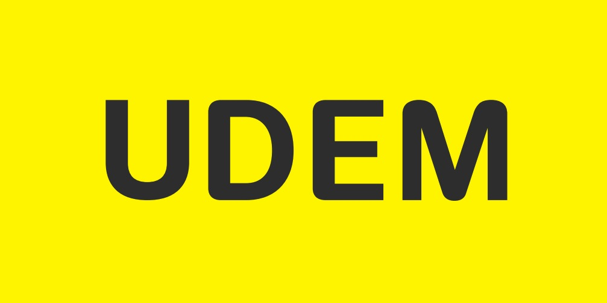

LDVNLicenciatura en Diseño Visual y Negocios Creativos
Formamos diseñadores que crean y dirigen proyectos visuales con visión de negocio.
Plan de estudios 2027
- semestres
- 9
- créditos
- 324
- asignaturas
- 46
- certificado integrado
- 1
El plan
La licenciatura prepara para diseñar y dirigir proyectos de identidad, información, experiencia, interacción y producción, y para vincularlos con un modelo de negocio.
Diseño Visual
Amplía el diseño gráfico hacia la interacción, la experiencia, los sistemas y los medios digitales.
Negocios Creativos.
Conecta el diseño con modelos de negocio para que dirijas proyectos de clientes o emprendas el tuyo. El componente de negocios recorre la carrera de segundo a noveno semestre.
El recorrido
Un estudio por semestre
De primero a octavo, cada semestre gira alrededor de un estudio de 12 créditos, el doble que una asignatura regular. El noveno cierra el Programa de Evaluación Final (PEF), que empieza en octavo.
- 1.ºFundamentos visualesEstudio de Diseño VisualPercepción, composición y principios básicos del lenguaje visual.
- 2.ºLenguaje visualEstudio de forma, color y estructuraForma, color, tipografía, retícula y relaciones compositivas.
- 3.ºIdentidad visualDiseño de identidad, forma y significadoSigno, identidad y construcción de significado.
- 4.ºInformación visualEstudio de información y visualizaciónJerarquía, visualización y comunicación de información.
- 5.ºMarca y estrategiaEstudio de marca y sistemas visualesIdentidad aplicada a contexto, audiencia y posicionamiento.
- 6.ºDiseño digitalEstudio de diseño de interacciónInterfaces, interacción y validación con usuarios.
- 7.ºDiseño de experienciasDiseño estratégico y de serviciosServicios, puntos de contacto e investigación cualitativa.
- 8.ºDirección y negocioEstudio integral de diseño y negociosGestión creativa, propuesta de valor y modelos de negocio.
- 9.ºProyecto integrador.Programa de Evaluación FinalAplicación autónoma de las competencias del programa.
Malla curricular
46 asignaturas en 9 semestres
Toca cualquier asignatura para ver de qué trata.
Mapa curricular del plan de estudios · Anexo 2 · modalidad mixta.
Certificado
Diseño Estratégico y Dirección Creativa.
Seis asignaturas optativas que llevan tu formación hacia la dirección creativa y el emprendimiento. Las cursas en los espacios de formación interdisciplinaria, de cuarto a octavo semestre, dentro de los 324 créditos del plan.
Esos mismos espacios también admiten intercambio académico, materias de posgrado, inglés profesionalizante u otras optativas del catálogo interdisciplinario.
Cómo aprendes
Proyectos con empresas y comunidades
- 1.º a 8.º
Aulas compartidas
Seis asignaturas reúnen a estudiantes de otros programas de arte y diseño de la UDEM, como Estrategia de negocios para arte y diseño.
- 3.º y 4.º
Inmersión laboral temprana
Diseño de identidad, forma y significado y Estudio de información y visualización te acercan a la práctica profesional desde la primera mitad del plan.
- 6.º
Colaboración internacional
En Estudio de diseño de interacción y Diseño de experiencia trabajas en línea con estudiantes de universidades de otros países (COIL).
- 7.º
Prácticas profesionales
Trabajas en una empresa o estudio de diseño con créditos dentro del plan.
- 7.º y 8.º
Aprendizaje en el servicio
Diseño estratégico y de servicios y Diseño participativo desarrollan proyectos con comunidades y organizaciones.
- 8.º y 9.º
Programa de Evaluación Final
Durante un año defines un problema de diseño con evidencia y desarrollas su solución.
Al egresar
Diseñas y diriges proyectos integrales con decisiones basadas en evidencia y evalúas su impacto social y cultural.
Lo que sabrás hacer
- Concebir y diseñar proyectos integrales de diseño.
- Estructurar sistemas de comunicación visual.
- Gestionar proyectos creativos y equipos interdisciplinarios.
- Desarrollar soluciones con tecnologías digitales y prototipos interactivos.
- Vincular el diseño con el negocio de una organización.
- Aplicar métodos de investigación para fundamentar decisiones.
Perfiles para los que te prepara
- Dirección de arte
- Dirección creativa
- Diseño de marca e identidad
- Diseño de interfaces y experiencia (UX/UI)
- Diseño de servicios
- Diseño de información y datos
- Gestión de proyectos creativos
- Estudio o agencia propia
¿Cómo se ve en la práctica? Conoce los caminos de egresados del programa
¿Es para ti?
Perfil de ingreso
- La comunicación visual y la creación de experiencias te interesan.
- Disfrutas generar ideas y explicarlas con imágenes y palabras.
- Sientes curiosidad por entender a las personas y a las organizaciones.
- Resolver problemas en equipo te motiva.
- Usas herramientas digitales para aprender y presentar proyectos.
LDG → LDVN · Plan 2027
El diseño evoluciona. La carrera también.